Das Wachtturm-Studium vorbereiten und pünktlich leiten
Version 4.0 · November 2026
⚠ Zwei wichtige Hinweise
Leite immer mit der Originalpublikation. Die App zeigt die Absätze und Fragen nur an, um die Zeiten zu berechnen. Der Studienleiter darf sich nie nach dem Inhalt im Timer richten: Um den Stoff den Zuhörern darzulegen, verwende immer die App JW Library oder den gedruckten Wachtturm.
Verwende während des Studiums den Präsentationsmodus. So sollte der Timer beim Leiten am besten benutzt werden, denn er vermeidet Ablenkungen: Er zeigt nur das Nötige, mit den Farben Grün, Gelb und Rot, damit du auf einen Blick siehst, wie du in der Zeit liegst, und mit großen, leicht zu drückenden Tasten, um zum nächsten Absatz zu gehen und Kommentare zu zählen (Abschnitt 9).
Der Studien-Timer hilft dem Bruder, der das Wachtturm-Studium leitet, die Zeit gut einzuteilen und pünktlich zu enden.
Du lädst den Artikel der Woche als PDF und die App:
liest den Artikel und findet die Absätze, Fragen, zu lesenden Bibeltexte, Bilder, Anmerkungen und Wiederholungsfragen;
berechnet, wie viel Zeit jeder Teil bekommt: Einleitung, jeder Absatz, Wiederholung und Schluss;
begleitet dich durch das Studium mit einer Stoppuhr pro Absatz und Farben, die zeigen, ob du im Zeitplan, in der Nachspielzeit oder über der Zeit bist;
passt sich selbst an: Dauert ein Absatz länger, verteilt sie die restliche Zeit auf die folgenden, damit du pünktlich endest.
Inoffizielle App. Sie ist ein kostenloses, unabhängiges Projekt. Sie ist keine offizielle Publikation und hat keine Verbindung zu jw.org oder zur Organisation der Zeugen Jehovas. Der Artikel wird auf deinem eigenen Gerät analysiert: Er wird an keinen Server gesendet und nirgends gespeichert.
Die Bilder in dieser Anleitung verwenden einen erfundenen Beispielartikel, keinen echten Wachtturm-Artikel.
2Die App installieren
Das Symbol der App ist ein orangefarbenes Buch mit einer farbigen Anzeige (Grün, Gelb und Rot) auf schwarzem Hintergrund.
Wenn du die App auf einem Android-Gerät schon im Browser nutzt, siehst du auf dem Startbildschirm die grüne Karte „Nutzt du Android?“ mit der Taste „In Google Play öffnen“.
iPhone und iPad
Im App Store gibt es sie noch nicht, aber im Web funktioniert sie genauso:
Tippe auf Teilen (das Quadrat mit dem Pfeil nach oben).
Wähle „Zum Home-Bildschirm“ und tippe auf Hinzufügen. Das Symbol erscheint auf deinem Bildschirm.
Computer
Öffne temporizador-estudio.vercel.app in Chrome oder Edge. Wenn du möchtest, installiere sie über das Installationssymbol in der Adressleiste als Programm.
Updates: Wenn es eine neue Version gibt, erscheint ein Hinweis mit der Taste Aktualisieren. Mitten im Studium aktualisiert sich die App nie von selbst.
3Der Startbildschirm
Das siehst du als Erstes, wenn du die App öffnest. Die roten Zahlen im Bild zeigen, wo was ist.
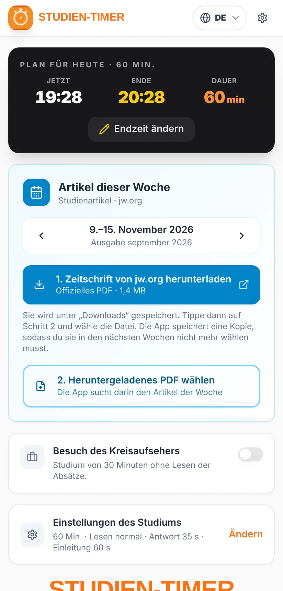
Startbildschirm.
Buch-Taste: öffnet diese Anleitung jederzeit.
„Zum ersten Mal hier?“: öffnet die Kurzanleitung oder diese Anleitung. Wenn du die App kennst, tippe auf Ausblenden.
„Nutzt du Android?“ (nur auf Android-Handys im Browser): die App aus Google Play installieren. Auch diese Karte lässt sich ausblenden.
Weiter unten findest du:
Plan für heute: die aktuelle Uhrzeit, wann das Studium endet und seine Dauer.
Artikel dieser Woche: um die Zeitschrift herunterzuladen und zu öffnen (Abschnitt 4).
Besuch des Kreisaufsehers: der Schalter für das 30-Minuten-Studium (Abschnitt 13).
Einstellungen des Studiums: eine Übersicht deiner Einstellungen mit dem Link Ändern.
Ganz unten Links zu Datenschutz, Anleitung, Google Play und dem Verlauf der Studien.
Oben findest du außerdem die Sprache (DE) und die Einstellungen⚙.
4Den Artikel der Woche laden
Die Karte „Artikel dieser Woche“ zeigt die aktuelle Woche (zum Beispiel 9.–15. November 2026) und die Wachtturm-Ausgabe, in der sie steht. Mit den Pfeilen ‹› kannst du eine andere Woche wählen.
„1. Zeitschrift von jw.org herunterladen“ öffnet das offizielle PDF der passenden Ausgabe. Unter Android wird es in Downloads gespeichert; auf dem iPhone tippe auf Teilen → „In Dateien sichern“.
„2. Heruntergeladenes PDF wählen“: Wähle diese Datei. Die App sucht in der Zeitschrift den Artikel der gewählten Woche und analysiert ihn. Nachdem du Schritt 1 angetippt hast, wird diese Taste beim Zurückkehren in die App grün („Heruntergeladen? Hier tippen, um es zu öffnen“): ein Tippen genügt.
Der Wachtturm wird in der Sprache der App heruntergeladen. Ist die App auf Deutsch, wird die deutsche Ausgabe heruntergeladen; ist sie auf Englisch, die englische, und so weiter für jede Sprache. Für eine andere Sprache stelle zuerst die Sprache der App um (Abschnitt 14). Auf Portugiesisch wird je nach deiner Wahl die Ausgabe für Portugal oder für Brasilien heruntergeladen.
Die App behält eine Kopie der Zeitschrift. Die folgenden Wochen derselben Ausgabe öffnest du direkt mit „Artikel dieser Woche öffnen“, ohne erneut etwas herunterzuladen. Gespeicherte Zeitschriften werden 3 Monate nach ihrer letzten Woche automatisch gelöscht.
Am Computer kannst du das PDF auch irgendwo auf den Startbildschirm ziehen (es erscheint „Wachtturm-PDF hier ablegen“) oder den Ordner wählen, in dem du die Zeitschriften speicherst – die App findet sie dann selbst.
Steht da, die Zeitschrift sei noch nicht erschienen? jw.org veröffentlicht jede Ausgabe einige Wochen im Voraus. Wählst du eine Woche weit in der Zukunft, ist sie vielleicht noch nicht verfügbar.
5Übersicht und Plan des Studiums
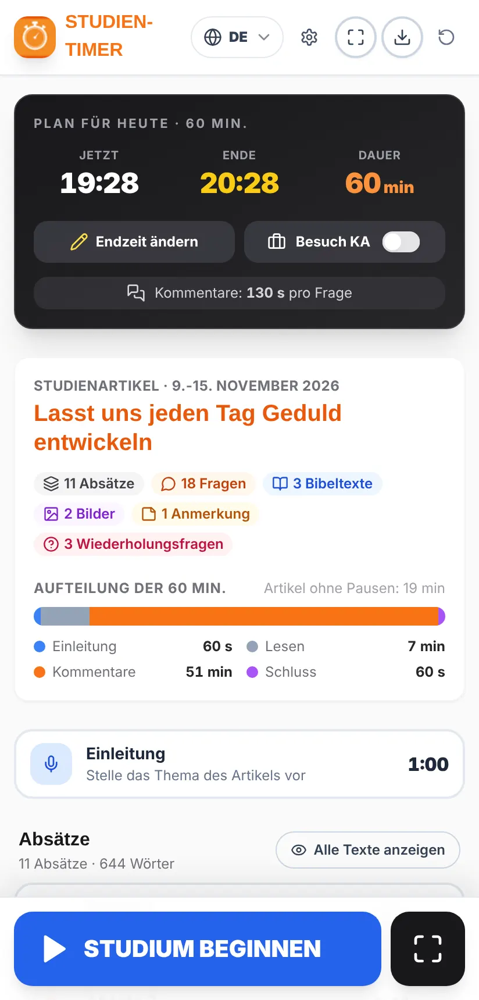
Der Plan für heute.
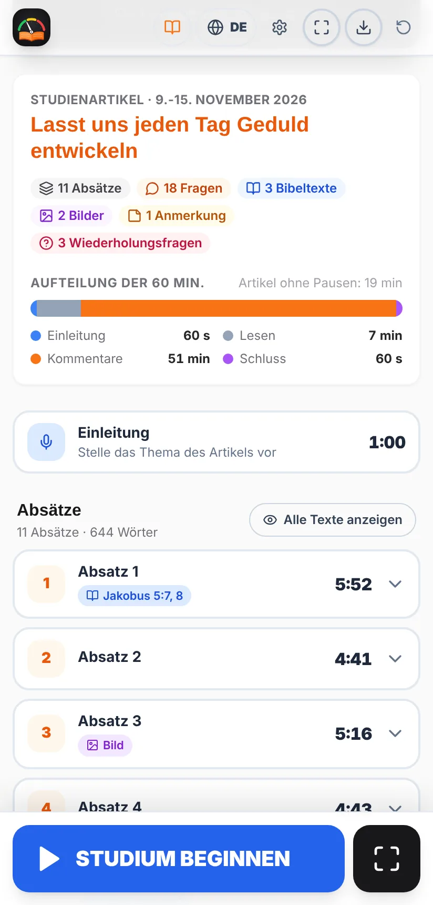
Die Übersicht des Artikels.
Endzeit: wann das Studium endet.
„Endzeit ändern“: nutze es, wenn der öffentliche Vortrag überzogen hat (siehe Kasten unten).
Wann ändere ich die Endzeit? Die Zusammenkunft dauert 1 Stunde und 45 Minuten: Lied und Gebet (5 Min.), öffentlicher Vortrag (30 Min.), Lied (5 Min.), Wachtturm-Studium (60 Min.) und Schlusslied mit Gebet (5 Min.).
Wenn der Vortrag überzieht, fehlen diese Minuten beim Wachtturm-Studium. Tippe vor Beginn des Studiums auf „Endzeit ändern“ und gib die Uhrzeit ein, zu der das Studium enden muss, damit die Zusammenkunft pünktlich endet (5 Minuten vor Schluss, für Lied und Gebet). Alles wird so berechnet, dass du zu dieser Zeit endest.
Endet der Vortrag pünktlich oder früher, ändere nichts: Das Studium dauert seine 60 Minuten, und die Zusammenkunft endet vielleicht etwas früher, aber nie später. Deshalb verlängert die App das Studium nie über die eingestellte Zeit.
Darunter zeigt die Übersicht des Artikels:
den Titel und die Woche,
wie viele Absätze, Fragen, Bibeltexte, Bilder und Fußnoten er hat,
einen farbigen Balken mit der Zeitverteilung: EinleitungLesenKommentareSchluss.
Im Plan steht außerdem „Kommentare: X s pro Frage“: die durchschnittliche Zeit für die Antworten auf jede Frage.
Wenn der Artikel nicht in die gewählte Zeit passt, erscheint ein Hinweis. Du kannst die Dauer verlängern oder in den Einstellungen schneller lesen lassen.
6Die Liste der Absätze
Jeder Absatz steht in einer Zeile mit seiner Nummer und seiner geplanten Zeit. Tippe auf einen Absatz, um ihn zu öffnen.
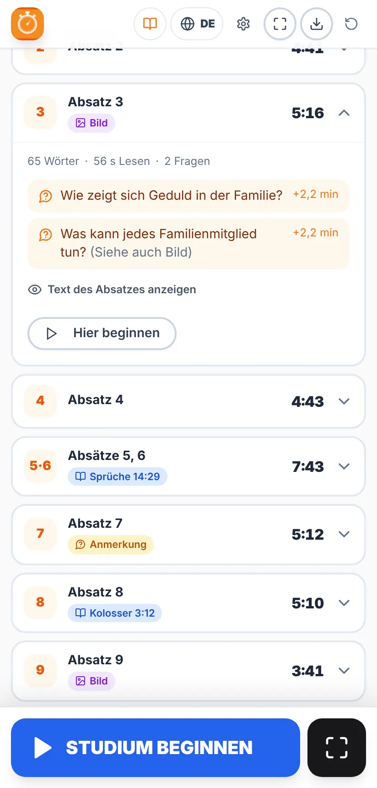
Ein geöffneter Absatz.
Angaben zum Absatz, jede in ihrer Farbe: Wörter (grau), Lesezeit (blau) und Fragen (orange). Während des Studiums erscheint auch die geplante Uhrzeit (lila).
Geplante Zeit für den Absatz: die Gesamtzeit und wie sie sich aufteilt. Der Balken zeigt das Lesen des Absatzes (blau), die Kommentare (orange) und bei langen Absätzen einen Zusatz für mehr Kommentare (grün). Gibt es einen Bibeltext zum Lesen, ein Bild oder eine Anmerkung, kommentieren die Anwesenden sie: Sie stehen bei den Kommentaren, unter den Fragen (zum Beispiel „Bibeltext zum Lesen: 35 s“). Die Teile ergeben zusammen die Gesamtzeit.
„Hier beginnen“: Wenn das Studium schon begonnen hat (zum Beispiel weil du zu spät kommst), springst du zu diesem Absatz.
Die farbigen Markierungen zeigen, worauf du achten musst:
Markierung
Bedeutung
Jakobus 5:7, 8
Es gibt einen Bibeltext zum Lesen.
Bild
Die Frage bezieht sich auf ein Bild im Artikel.
Anmerkung
Es gibt eine Anmerkung zu besprechen.
★ Kernpunkt
Die Frage erwähnt einen Kasten oder einen Gedanken in Anführungszeichen.
Mit „Text des Absatzes anzeigen“ kannst du den Text lesen, um die Zeiten vorzubereiten. Zum Leiten nimm immer die Originalveröffentlichung.
Absätze mit einer gemeinsamen Frage (zum Beispiel „5, 6“) gehören zusammen, und die Taste Weiter überspringt die ganze Gruppe.
7Das Studium Schritt für Schritt leiten
Empfohlen: Nutze während des Studiums den Präsentationsmodus (Abschnitt 9). Hier wird erklärt, wie es funktioniert; in beiden Ansichten ist es gleich.
Auf dem Handy sind die wichtigsten Tasten immer unten:
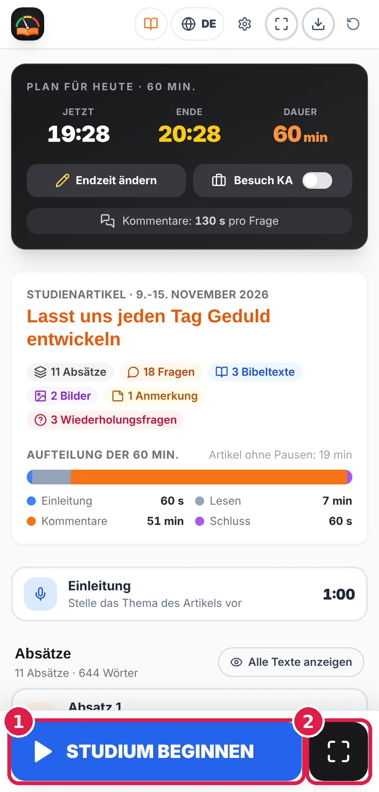
Vor dem Beginn.
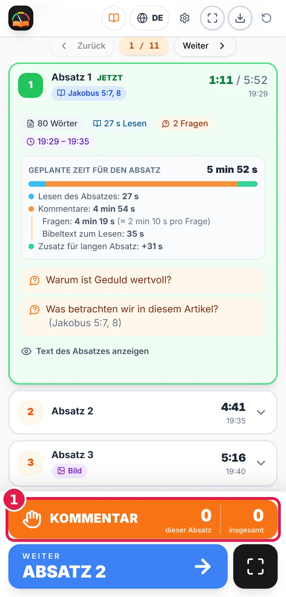
Während eines Absatzes.
Große blaue Taste: sie zeigt, was als Nächstes kommt. Tippe darauf, wann immer du zum nächsten Teil gehst: Studium beginnen → Absatz 1 → Absatz 2 → … → Wiederholung → Schluss → Studium beenden.
Schwarze Taste⛶: öffnet den Präsentationsmodus.
Während der Absätze erscheint auch die orange Taste ✋ KOMMENTAR: Tippe darauf, wann immer jemand einen Kommentar gibt. Am Ende siehst du, wie viele Kommentare es gab.
Einleitung. Tippe auf „Studium beginnen“. Die Gesamtuhr und die Uhr für die Einleitung starten.
Absätze. Tippe zu Beginn jedes Absatzes auf Weiter. Du siehst die verbrauchte und die geplante Zeit (zum Beispiel 1:11 / 5:43) und die Farbe (Abschnitt 8).
Wiederholungsfragen. Nach dem letzten Absatz kommen die Fragen aus dem Kasten am Ende.
Schluss. Er dauert genau so lange, wie bis zur Endzeit bleibt: Ist noch Zeit übrig, nutzt er sie ganz, auch wenn das mehr als die Minute aus den Einstellungen ist, und bleibt weniger, wird er kürzer. Ist die Endzeit überschritten, wird er rot.
Studium beenden. Die Uhr stoppt und der Bericht zum Studium wird gespeichert (Abschnitt 15).
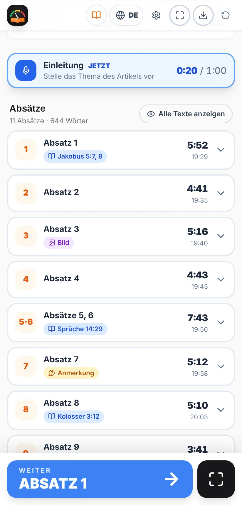
Die Einleitung läuft.
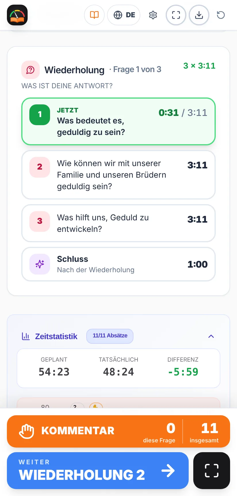
Wiederholungsfragen.
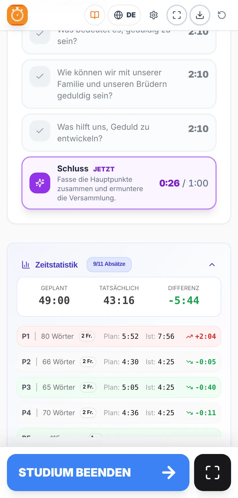
Schluss.
Mit der Taste ⏸ im Plan kannst du die Uhr bei einer Unterbrechung anhalten. Dabei stoppt die Uhr des laufenden Teils, aber die Endzeit verschiebt sich nicht: Die verbleibende Zeit läuft weiter, denn die Zusammenkunft endet pünktlich.
8Die Farben: Grün, Gelb und Rot
Die Karte des laufenden Teils (Absatz, Einleitung, Wiederholungsfrage oder Schluss) ändert ihre Farbe je nach verstrichener Zeit:
Farbe
Wann
Was tun
IM ZEITPLAN
Bis zur geplanten Zeit.
Alles gut: weiter so.
NACHSPIELZEIT
Die Zeit ist überschritten, aber um höchstens 30 %.
Die Kommentare abschließen.
ÜBERZOGEN
Mehr als 30 % über der geplanten Zeit.
Zum nächsten Absatz gehen.
Im Zeitplan.
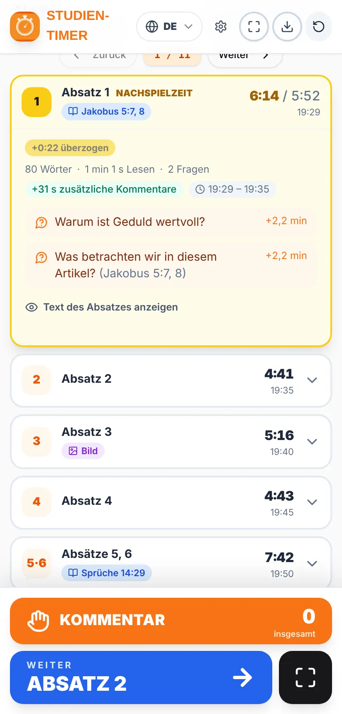
Nachspielzeit, mit der überzogenen Zeit.
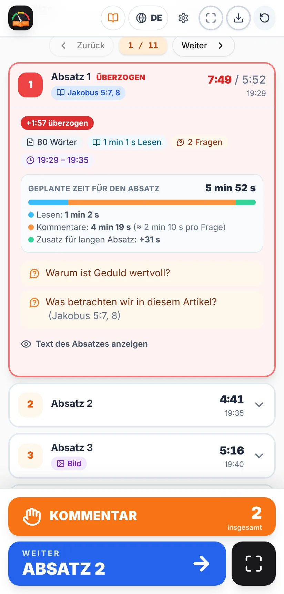
Überzogen.
In den letzten 5 Minuten des Studiums haben Absätze und Wiederholungsfragen keine Nachspielzeit: Sie springen direkt von Grün auf Rot, damit die Zeit für das Ende nicht verloren geht. Der Schluss behält immer seine Nachspielzeit.
Dauert ein Teil länger, ist das kein Problem: Beim Tippen auf Weiter verteilt die App die restliche Zeit neu, damit du pünktlich endest.
Auch der „Weiter“-Knopf warnt dich
Wenn der laufende Teil rot wird, ändert sich auch der große Knopf zum Weitergehen, damit du es sofort siehst:
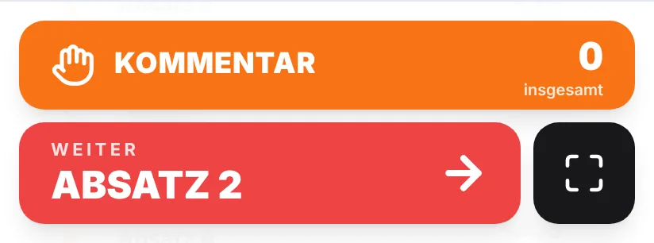
Rot: Die Zeit lässt sich noch aufholen.
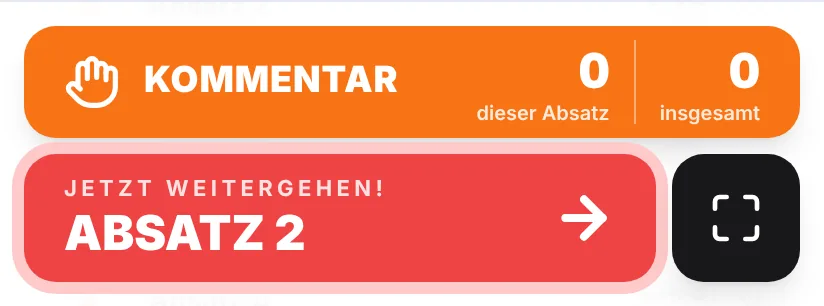
Blinkend: jetzt weitergehen.
Roter Knopf: Der Teil ist überzogen, aber die Zeit lässt sich im Rest noch aufholen. Beginne, die Kommentare abzuschließen.
Roter, blinkender Knopf mit „Jetzt weitergehen!“: Die Zeit lässt sich nicht mehr aufholen (es blieben weniger als 30 Sekunden für jede restliche Frage, oder du bist in den letzten 5 Minuten). Geh so bald wie möglich weiter.
Im Präsentationsmodus wird der Knopf weiß mit roter Schrift, damit er auf jeder Hintergrundfarbe gut zu sehen ist.
Wenn du das nicht möchtest, schalte es unter Einstellungen → Hinweise → „Roter ‚Weiter‘-Knopf“ aus.
9Der Präsentationsmodus
So leitest du das Studium am besten. Er zeigt nur das Nötige, mit großer Schrift und großen Tasten, und die Farbe zeigt dir auf einen Blick, wie du in der Zeit liegst.
Du öffnest ihn mit der Taste ⛶ unten und schließt ihn mit dem ✕ oben (oder mit der Zurück-Taste des Handys, ohne die App zu verlassen).
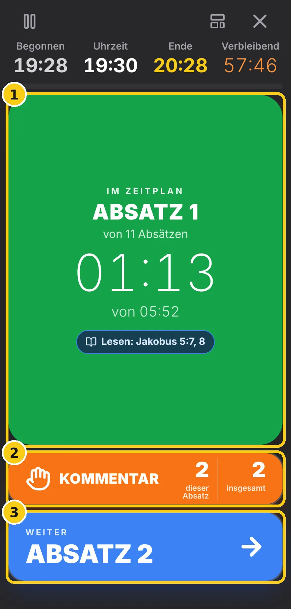
Präsentationsmodus während eines Absatzes.
Farbiges Feld: wo du gerade bist (zum Beispiel Absatz 1), die Uhr für diesen Teil und seine geplante Zeit. Grün, gelb oder rot, je nachdem, wie du in der Zeit liegst.
Kommentar: Tippe darauf, wann immer jemand einen Kommentar gibt. Links siehst du die Kommentare zu diesem Absatz (oder dieser Frage), rechts die Gesamtzahl.
Weiter: geht zum nächsten Teil. Die Taste zeigt, was als Nächstes kommt.
Oben siehst du, wann das Studium begonnen hat, die aktuelle Uhrzeit, wann es endet und wie viel Zeit bleibt.
Es gibt drei Ansichten. Du wechselst sie mit der Taste ▦ oben oder unter Einstellungen → Anzeige:
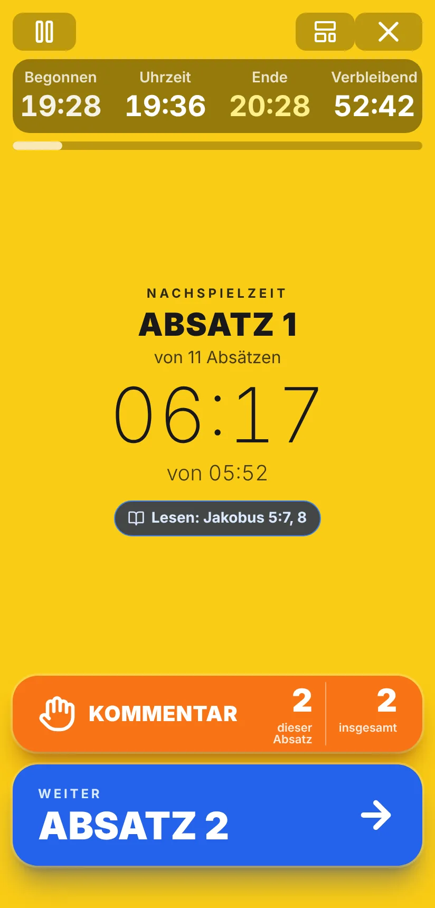
Ampel: der ganze Bildschirm wechselt die Farbe.
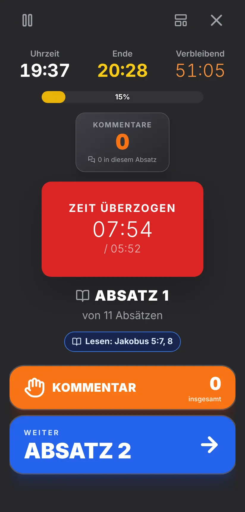
Klassisch: mit dem Kommentarzähler.
Am Ende zeigt die große Taste „Studium beenden“ und danach „Bericht ansehen“.
10So werden die Zeiten berechnet
Lesen jedes Absatzes = seine Wörter ÷ Lesegeschwindigkeit (150, 180 oder 210 Wörter pro Minute). Jeder Bibeltext, jedes Bild, jede Anmerkung und jeder Kernpunkt bringt zusätzlich die Zeit pro Antwort (mindestens 30 Sekunden; standardmäßig 35) als Kommentar, denn die Anwesenden lesen oder kommentieren ihn.
Einleitung und Schluss haben die Zeit aus den Einstellungen (standardmäßig je 1 Minute). Der Schluss richtet sich nach der Endzeit: Bleibt nach der Wiederholung Zeit übrig, bekommt er alles; ist es weniger, wird er kürzer.
Kommentare: Die übrige Zeit wird auf alle Fragen verteilt. Lange oder zusammengefasste Absätze bekommen etwas mehr (der grüne „Zusatz“ aus Abschnitt 6).
Während des Studiums: Jedes Mal, wenn du auf Weiter tippst, wird der Rest neu berechnet, damit du pünktlich fertig wirst.
Beispiel: Bei einem 60-Minuten-Studium mit 11 Absätzen und 21 Fragen entfallen etwa 7 Minuten aufs Lesen, 2 auf Einleitung und Schluss und etwa 51 auf Kommentare: gut 2 Minuten pro Frage.
11Einstellungen
Tippe oben rechts auf ⚙. Die Einstellungen werden auf deinem Gerät gespeichert und sind in vier Registerkarten aufgeteilt:
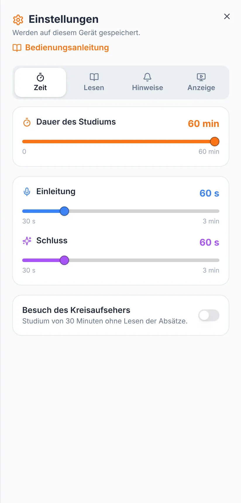
Zeit
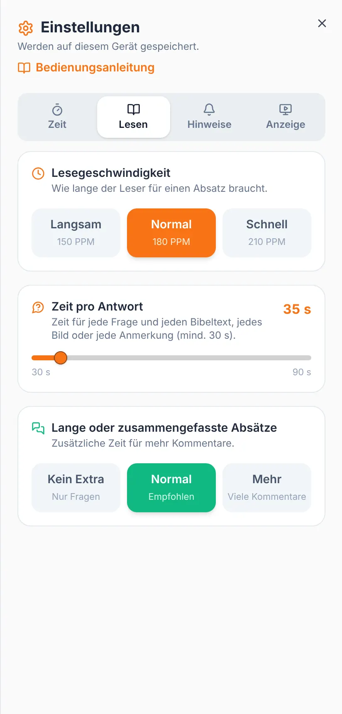
Lesen
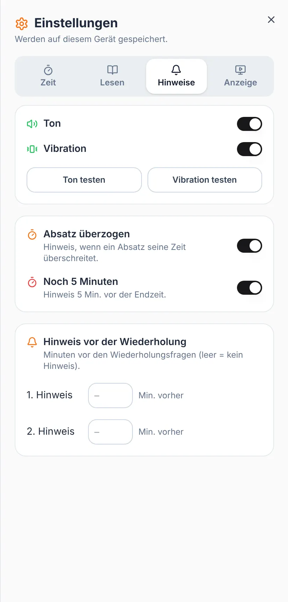
Hinweise
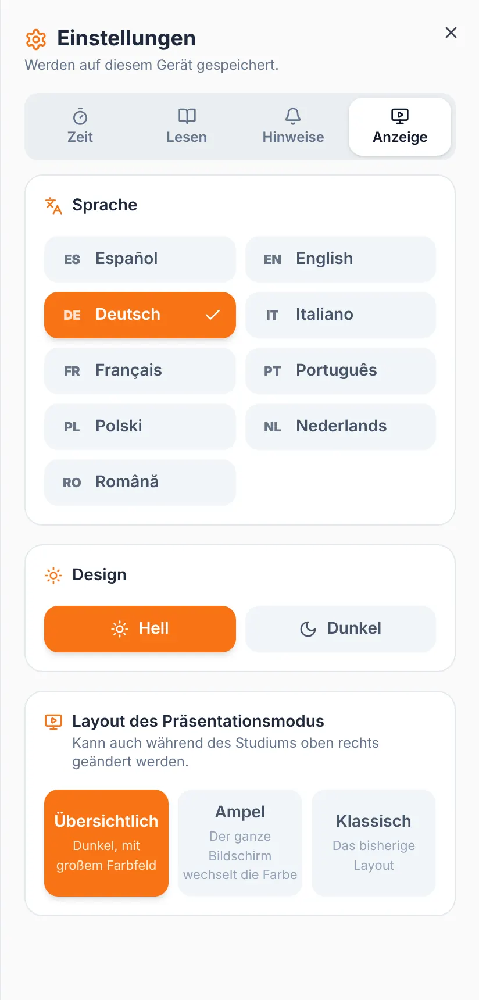
Anzeige
Registerkarte
Was du ändern kannst
Zeit
Dauer des Studiums (bis 60 Min.). Dauer von Einleitung und Schluss (30 s bis 3 Min.). Besuch des Kreisaufsehers.
Lesen
Lesegeschwindigkeit des Lesers: Langsam (150), Normal (180) oder Schnell (210 Wörter/Min.). Zeit pro Antwort (30 bis 90 s; gilt auch für jeden Bibeltext, jedes Bild, jede Anmerkung und jeden Kernpunkt). Lange oder zusammengefasste Absätze: Kein Extra, Normal oder Mehr Kommentare.
Hinweise
Ton und Vibration (mit Tasten zum Testen). Hinweis Absatz überzogen, Hinweis „Noch 5 Minuten“ und bis zu zwei Hinweise vor der Wiederholung.
Anzeige
Sprache, helles oder dunkles Design (mit sechs dunklen Varianten: Graphit, AMOLED-Schwarz, Nachtblau, Warm, Waldgrün und Aubergine; und sechs hellen Varianten: Weiß, Creme, Himmelblau, Mintgrün, Lavendel und Perlgrau) und das Design des Präsentationsmodus.
Änderst du Lesegeschwindigkeit oder Zeit pro Antwort während des Studiums, gilt das für das nächste Studium.
12Ton- und Vibrationshinweise
Absatz überzogen: ertönt, wenn der laufende Absatz seine Zeit überschreitet.
Noch 5 Minuten: 5 Minuten vor der Endzeit, mit Ton, Vibration und einer Meldung auf dem Bildschirm.
Vor der Wiederholung: Gib an, wie viele Minuten vor den Wiederholungsfragen du einen Hinweis möchtest (zum Beispiel 10 und 5). Leer lassen, wenn du keinen willst.
Wenig Zeit für die Wiederholung: Bleiben weniger als 20 Sekunden pro Wiederholungsfrage, warnt dich die App.
Roter „Weiter“-Knopf: Der Knopf zum Weitergehen wird rot, wenn ein Teil überzogen ist, und blinkt, wenn sich die Zeit nicht mehr aufholen lässt (Abschnitt 8).
Achte darauf, dass das Handy nicht stumm geschaltet ist, wenn du die Hinweise hören willst. Vibration funktioniert unter Android; auf dem iPhone hängt sie vom Browser ab.
13Besuch des Kreisaufsehers
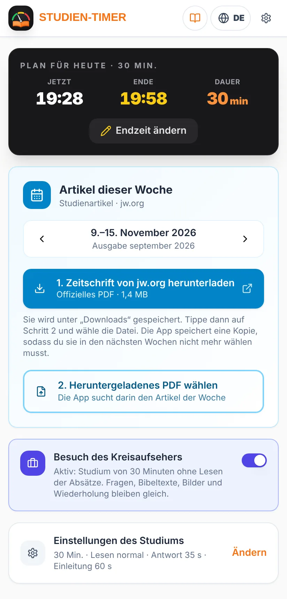
Schalter an: 30-Minuten-Studium.
In der Woche des Besuchs schalte auf dem Startbildschirm (oder unter Einstellungen → Zeit) „Besuch des Kreisaufsehers“ ein. Das Studium dauert dann 30 Minuten und die Absätze werden nicht gelesen: Fragen, Bibeltexte, Bilder und Wiederholung bleiben. Denk daran, den Schalter nach dem Besuch wieder auszuschalten.
In dieser Woche werden die Absätze nicht gelesen. Bei der geplanten Zeit jedes Absatzes stehen Bibeltexte, Bilder und Anmerkungen bei den Kommentaren, zum Beispiel „Bibeltext zum Lesen“ oder „Bild zum Kommentieren“ (im Plural, wenn es mehrere sind).
14Sprachen
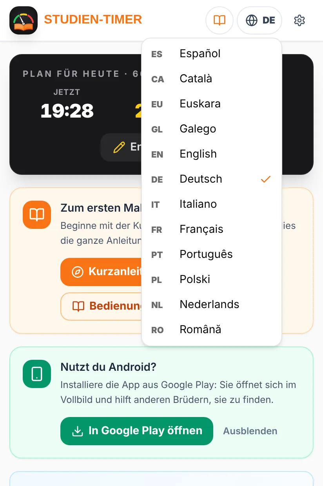
Sprachmenü.
Die App gibt es auf Spanisch, Katalanisch, Baskisch, Galicisch, Englisch, Deutsch, Italienisch, Französisch, Portugiesisch, Polnisch, Niederländisch und Rumänisch. Ändere die Sprache mit der Globus-Taste oben oder unter Einstellungen → Anzeige. Beim Wechsel der Sprache:
erscheint die ganze App in dieser Sprache, mit den passenden Datums- und Zeitangaben;
lädt die jw.org-Taste den Wachtturm in genau dieser Sprache herunter. Die Sprache der App bestimmt die Sprache der Zeitschrift;
fragt die App auf Portugiesisch einmal, ob du die Ausgabe für Portugal oder für Brasilien möchtest. Das lässt sich später unter Einstellungen → Anzeige ändern.
Diese Anleitung gibt es in all diesen Sprachen: Benutze die Sprachtasten ganz oben.
15Am Ende: Bericht und Verlauf
Wenn du auf „Studium beenden“ tippst, speichert die App einen Bericht mit den Zeiten jedes Teils. So siehst du, was zu lang war, und kannst es beim nächsten Mal besser machen.
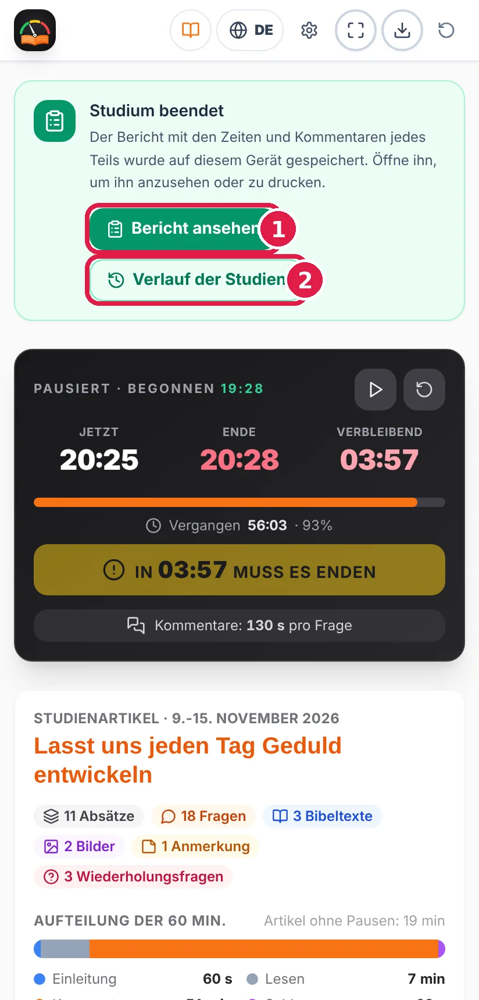
Oben erscheint die Karte „Studium beendet“.
Bericht ansehen: öffnet den Bericht dieses Studiums in einem eigenen Tab.
Verlauf der Studien: öffnet die Liste aller gespeicherten Studien.
Der Bericht
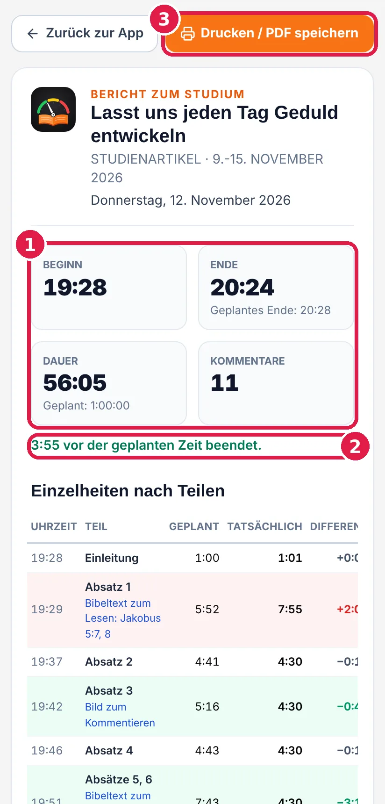
Oberer Teil des Berichts.
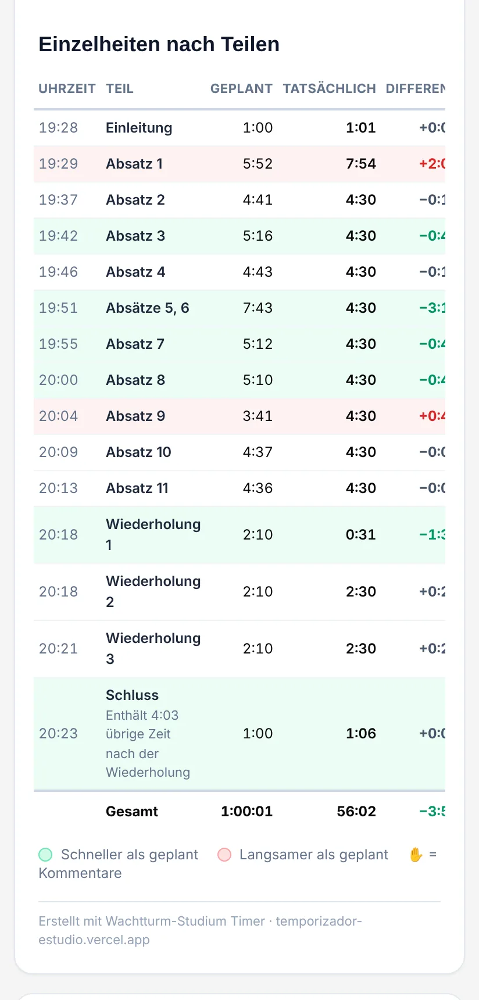
Die Tabelle mit jedem Teil.
Beginn, Ende und Dauer des Studiums, mit dem geplanten Ende und der Zahl der Kommentare.
Zusammenfassung in einem Satz, zum Beispiel „3:57 vor der geplanten Zeit beendet“ (grün) oder „nach“ (rot).
Drucken / PDF speichern: um ihn auf Papier zu drucken oder als Datei zu speichern.
Die Tabelle hat für jeden Teil eine Zeile: Einleitung, jeder Absatz, jede Wiederholungsfrage und Schluss. In jeder Zeile siehst du:
die Uhrzeit, zu der dieser Teil begann,
Geplant und Tatsächlich: die geplante und die wirklich verbrauchte Zeit,
Differenz:grün, wenn es schneller ging, und rot, wenn es länger dauerte,
✋: die markierten Kommentare.
Unter jedem Absatz in Blau: die zu lesenden Bibeltexte (mit Stellenangabe), die Bilder und die Fußnoten, die zu kommentieren waren.
Am Computer und beim Drucken erscheinen auch die Wörter und Fragen jedes Absatzes. Der gedruckte Bericht passt auf eine Seite.
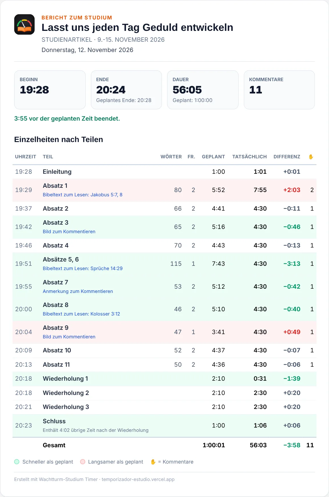
Der vollständige Bericht, wie er am Computer oder gedruckt aussieht.
Der Verlauf der Studien
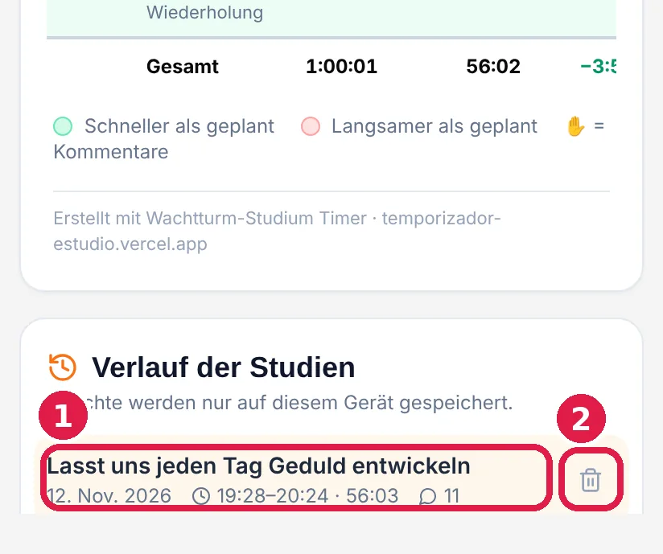
Liste der gespeicherten Studien unter dem Bericht.
Tippe auf ein Studium, um seinen Bericht zu sehen. Datum, Uhrzeiten, Dauer und Kommentare werden angezeigt.
Papierkorb: um einen Bericht zu löschen. Einmal tippen und dann mit „Löschen?“ bestätigen.
Berichte werden nur auf diesem Gerät gespeichert, nie im Internet. Es werden bis zu 100 Studien aufbewahrt. Wenn du die Daten des Browsers oder der App löschst, geht der Verlauf verloren.
Du kannst den Verlauf auch über die Karte „Verlauf der Studien“ auf dem Startbildschirm öffnen.
Weitere Möglichkeiten
Unter dem Plan findest du auch die Zeitstatistik für jeden Absatz.
Mit der Taste Exportieren⬇ oben kannst du den Plan als Bild oder PDF speichern.
Für ein neues Studium tippe auf Neu beginnen↻.
16Häufige Fragen
Kann ich leiten, indem ich die Absätze und Fragen in der App lese?
Nein. Die App zeigt sie nur an, um die Zeiten zu berechnen. Zum Leiten verwende immer JW Library oder den gedruckten Wachtturm.
Warum wurde der Wachtturm in einer anderen Sprache heruntergeladen?
Die Zeitschrift wird in der Sprache der App heruntergeladen. Ändere die Sprache mit der Globus-Taste und tippe erneut auf „Zeitschrift von jw.org herunterladen“.
Es heißt, das Format des Artikels wird nicht erkannt.
Verwende das offizielle PDF des Wachtturms, Studienausgabe, von jw.org (die Taste „Zeitschrift von jw.org herunterladen“ erledigt das für dich). Gescannte PDFs oder PDFs aus Bildschirmfotos können nicht gelesen werden.
Der Artikel der Woche wird in der Zeitschrift nicht gefunden.
Prüfe, ob die gewählte Woche zu dieser Ausgabe gehört. Wenn nicht, zeigt die App den nächstliegenden Artikel und lässt dich eine andere Woche wählen.
Brauche ich während des Studiums Internet?
Nur zum Herunterladen der Zeitschrift. Ist der Artikel geladen, funktioniert der Timer ohne Verbindung.
Ich bin zu spät gekommen oder habe verspätet begonnen. Was tun?
Öffne den Absatz, bei dem ihr seid, und tippe auf „Hier beginnen“. Die App verteilt die restliche Zeit.
Der öffentliche Vortrag hat überzogen.
Tippe vor dem Beginn auf „Endzeit ändern“ und gib die Uhrzeit ein, zu der das Studium enden muss, damit die Zusammenkunft pünktlich endet. Die App kürzt alles so, dass du zu dieser Zeit endest. Diese Option kürzt das Studium nur: Sie verlängert es nie.
Die Hinweise ertönen nicht.
Prüfe unter Einstellungen → Hinweise, ob sie aktiviert sind, tippe auf „Ton testen“ und achte darauf, dass das Handy nicht stumm ist.
Welche Daten speichert die App?
Nur deine Einstellungen und die Zeitschriften, die du behalten möchtest – und immer auf deinem Gerät. Es gibt keine Konten und es werden keine Daten an einen Server gesendet. Mehr dazu in der Datenschutzerklärung.
Wo sehe ich die Studien anderer Wochen?
Im Verlauf der Studien: Tippe am Ende eines Studiums auf „Verlauf der Studien“ oder nutze die grüne Karte auf dem Startbildschirm.
Kann ich einen Bericht löschen?
Ja. Tippe im Verlauf auf den Papierkorb neben dem Studium und bestätige mit „Löschen?“.
Warum dauerte der Schluss länger als geplant?
Bleibt nach der Wiederholung Zeit übrig, bekommt der Schluss diese Zeit, damit du pünktlich fertig wirst. Der Bericht zeigt das unter „Schluss“.